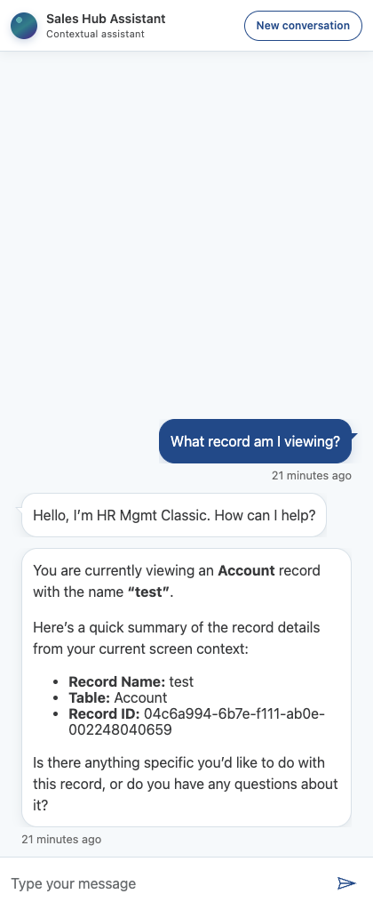

Style, test, and release the Agent Sidecar
This interactive guide covers the complete workstation setup, safe source-editing model, local validation, iterative Dynamics testing, and controlled solution promotion process.
1. Target outcome
The refreshed sidecar uses restrained corporate styling while preserving authentication, current-record context, and role-aware behavior.

2. Machine prerequisites
VS Code is already installed. Install and verify the remaining tools before cloning or building.
Git
Needed to clone, branch, review, and preserve changes.
git --versionOn a fresh Mac, this may open the Xcode Command Line Tools installer.
Node.js LTS + npm
Use the current Node.js LTS release. npm ships with Node.
node --version
npm --versionpnpm
The repository uses a pnpm lockfile. Enable Corepack, then verify pnpm.
corepack enable
pnpm --versionPower Platform CLI
Install the Microsoft Power Platform Tools extension in VS Code (recommended), or install PAC as a .NET global tool.
dotnet --version
dotnet tool install --global Microsoft.PowerApps.CLI.Tool
pac helpMicrosoft currently recommends .NET 10 for the global-tool route. PAC is installed under $HOME/.dotnet/tools.
Node.js LTS + npm
Install current Node.js LTS with the PATH option enabled.
node --version
npm --versionpnpm
Use Corepack from Node.js, then verify pnpm.
corepack enable
pnpm --versionPower Platform CLI
Install Microsoft Power Platform Tools in VS Code (recommended). Use a VS Code PowerShell terminal. The .NET global-tool route is also supported.
dotnet --version
dotnet tool install --global Microsoft.PowerApps.CLI.Tool
pac helpPowerPlatform-Dataverse-Client, and pandas are needed only when using this repository's agent-assisted Dataverse workflows. They are not required to edit CSS, run the Model-driven build, or manually import a solution through the Maker portal.One-command verification
git --version
node --version
npm --version
pnpm --version
dotnet --version
pac help3. Access and environment prerequisites
Tooling alone is not enough. Confirm the environment, solution, and security model before changing anything.
| Need | Why |
|---|---|
| GitHub repository access | Clone the source, create a branch, and submit a pull request. |
| Dedicated Dataverse development environment | Unmanaged customization and runtime iteration belong in development—not production. |
| System Customizer or equivalent | Update web resources, solution version, publish customizations, and export the solution. |
| Import rights in test/UAT | Install the candidate managed solution and perform acceptance testing. |
| Access to the target Model-driven App and agent | Open the sidecar and verify live record context. |
| Environment URLs and authentication profiles | Every CLI mutation must be aimed at an explicitly confirmed environment. |
pac org who --environment https://YOUR-ENVIRONMENT.crm.dynamics.com and verify both the environment name and URL.4. Customize the maintained source
Use source control as the record of intent. Generated HTML and exported solution ZIPs are build artifacts.
- Clone and branch.
git clone https://github.com/martycarreras-psnl/CustomAgentMDA.git cd CustomAgentMDA git switch -c feat/your-brand-sidecar pnpm install - Change the shell and corporate visual system.
Edit
model-driven/webresources/maftagsc_/copilot/agentSidePane.template.htmlfor theme variables, toolbar, cards, spacing, states, supplemental CSS, and accessible focus treatment. - Change Web Chat presentation.
Edit the
styleOptionsinmodel-driven/webresources/maftagsc_/copilot/agentSidePane.tsfor message bubbles, nubs, composer controls, suggested actions, typography, and conversation spacing. - Keep the behavioral boundary intact.
Do not alter delegated authentication, role-aware context, app-keyed configuration, record targeting, or token handling as part of a visual-only change.
Template owns
- Corporate design tokens
- Header and toolbar
- Loading/sign-in/error states
- Layout, borders, shadows
- Responsive and focus styling
TypeScript style options own
- Agent/user bubble appearance
- Bubble tails and radii
- Composer and send button
- Suggested action pills
- Web Chat spacing and typography
model-driven/.../agentSidePane.html, solution/WebResources/.../agentSidePane.html, or an exported ZIP. The build regenerates those HTML projections.5. Build and validate locally
Run the complete Model-driven gate before uploading anything to Dataverse.
pnpm run typecheck:model-driven
pnpm run build:model-driven
pnpm run test:model-driven
git diff --checkThe build bundles the TypeScript dependencies into the deployable HTML and synchronizes the generated solution projection. The tests protect the theme markers, build output, authentication assumptions, and role-aware context behavior.
6. Iterate safely in development
For rapid styling cycles, upload the generated web resource into the unmanaged development solution, publish, refresh, and repeat.
- Confirm the development target.
pac org who --environment https://YOUR-DEV-ENVIRONMENT.crm.dynamics.com - Open the unmanaged solution.
In Power Apps Maker Portal ↗, select the development environment, open Solutions → AgentSidecarCore → Objects → Web resources, and open
maftagsc_/copilot/agentSidePane.html. - Upload the generated file.
Upload
model-driven/webresources/maftagsc_/copilot/agentSidePane.html, save, and publish. This is a deployment of a generated artifact; the maintained source remains the template and TypeScript in Git. - Refresh the runtime.
Close/reopen the side pane and hard-refresh the Model-driven App. Web-resource caching can otherwise make a successful upload look unchanged.
- Smoke-test and repeat.
Check the toolbar, both bubble types, composer, suggested actions, loading/error states, current-record response, keyboard use, narrow pane width, and browser zoom.
7. Package and promote an approved theme
After visual approval, turn the development solution into a versioned release candidate.
- Commit and review.
git status git add model-driven solution docs git commit -m "feat(sidecar): apply corporate conversation theme" git push -u origin feat/your-brand-sidecarOpen a pull request and require the CI gates to pass.
- Increment the solution version in development.
Open AgentSidecarCore in the Maker portal, select Overview, and set a version higher than the installed downstream version—for example,
1.0.0.3. - Export release artifacts from development.
Export the approved solution as managed for test/UAT/production. Retain an unmanaged export as the development backup/source artifact.
pac solution export --name AgentSidecarCore \ --path ./out/AgentSidecarCore-1.0.0.3-managed.zip \ --managed true \ --environment https://YOUR-DEV-ENVIRONMENT.crm.dynamics.com \ --overwrite - Import the exact managed candidate into test/UAT.
pac org who --environment https://YOUR-TEST-ENVIRONMENT.crm.dynamics.com pac solution import \ --path ./out/AgentSidecarCore-1.0.0.3-managed.zip \ --environment https://YOUR-TEST-ENVIRONMENT.crm.dynamics.com \ --publish-changes - Promote without rebuilding.
After UAT approval, import the exact same managed ZIP into production. Do not rebuild or manually modify the package between environments.
solution-core/AgentSidecarCore.zip is not yet the durable, tested 1.0.0.2 release artifact. Until it is refreshed or attached to a release, export the approved Core from the development environment rather than distributing that repository ZIP.8. Acceptance checklist
Complete this in test/UAT before production promotion.
Troubleshooting
The old design still appears after publishing
Close the pane, hard-refresh the Model-driven App, and reopen it. Confirm the development web resource contains the new build marker. Dataverse web-resource caching is often the cause.
pac is installed but not found on macOS/Linux
Check $HOME/.dotnet/tools/pac. Ensure $HOME/.dotnet/tools—not a literal ~/.dotnet/tools string—is on PATH, then reopen the VS Code terminal.
pac works only in one VS Code terminal
If PAC came from the Power Platform Tools extension, use the VS Code terminal. Install PAC as a .NET global tool if it must also be available to other shells.
Node, npm, or pnpm is not recognized
Install Node.js LTS, close every VS Code terminal, reopen VS Code, and rerun the checks. Use corepack enable for pnpm.
Solution import does not appear as an update
Confirm the solution unique name and package type match the installed solution, and that the incoming version is higher.
The import succeeds but chat does not connect
Styling does not configure identity. Verify target binding, app registration, delegated permissions, agent schema name, secure token-broker configuration, and user access to the published agent.
References
- Theme implementation PR #2 ↗
- Target-environment validation evidence ↗
- Install Microsoft Power Platform Tools for VS Code ↗
- Install Power Platform CLI with .NET Tool ↗
- PAC solution command reference ↗
- Managed and unmanaged solution concepts ↗
- Create and update solutions ↗
- Import, update, and export solutions ↗